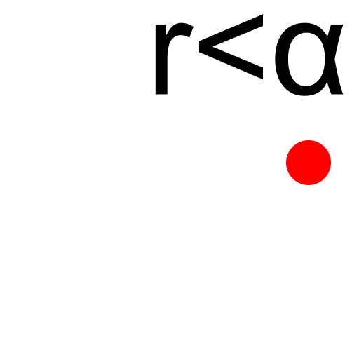
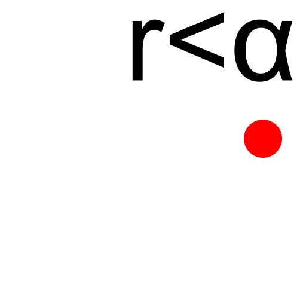
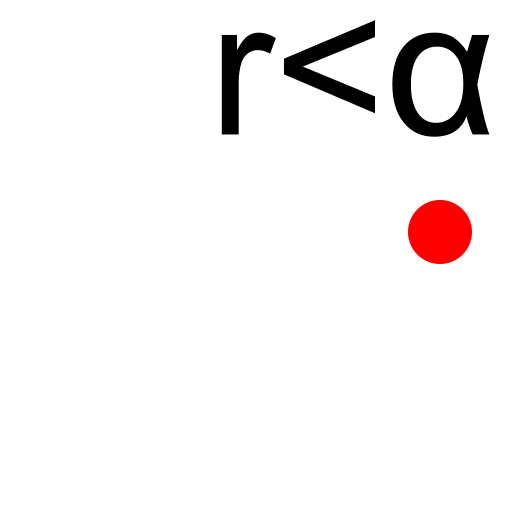
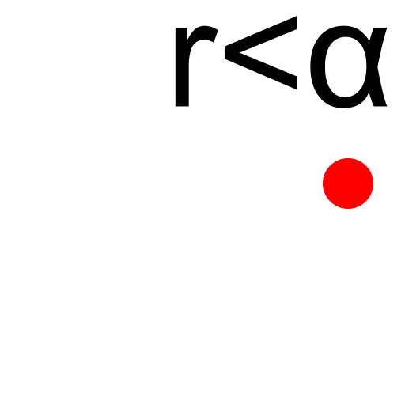
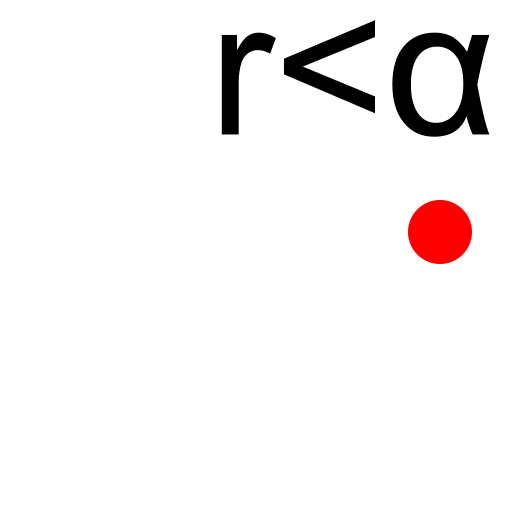

Polar Position
Toolbar / Icon:

Menu:
Info > Polar Position
Shortcut:
I, L
Commands:
infopospol | il
Description:
This tool outputs the absolute, polar coordinates of chosen points in the drawing.
 


